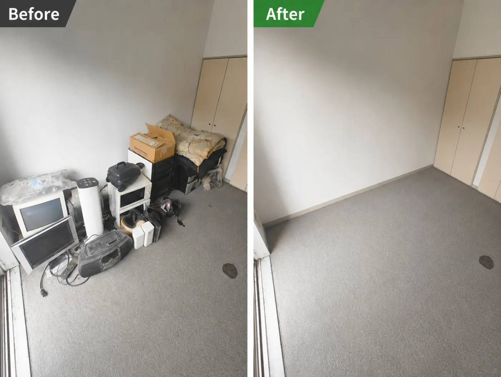

重くて運び出せない
大きな家具や家電を、自分で外まで運ぶのが難しい。
所沢市を中心に1都3県対応
仕分けから家具・不用品の搬出、家全体の片付けまで。
買取可能な品は査定し、リユースも含めてご提案します。
すっきりした暮らしへ。
WORRIES
大きな家具や家電を、自分で外まで運ぶのが難しい。
一部屋や物置に物がたまり、整理のきっかけがつかめない。
遠方に住んでいる、量が多いなど、家族だけでは進めにくい。
退去や引越しに合わせて、必要な物と不要な物を整理したい。
SERVICE
まずは1点から
まとめてすっきり
量が多くても安心
OUR POLICY
片付けで出た物をすべて同じように扱うのではなく、状態や種類を一つひとつ確認。買取や国内リユースなど、可能な限り次につなげる方法を検討します。
「まだ使えるかもしれない」「捨てるのはもったいない」——そんなお気持ちにも寄り添いながら、納得できる片付けをお手伝いします。
PRICE
家具1点
一部屋の片付け
家全体の片付け
WORKS

掲載準備中
掲載準備中
掲載準備中
FLOW
LINE・電話・フォームからご連絡ください。
写真や現地確認で内容を伺い、お見積もりします。
ご希望の日程を調整し、スタッフが作業します。
作業内容をご確認いただき、完了です。
FAQ
Aはい、家具や家電1点からご相談いただけます。品物の種類や大きさ、搬出経路をお知らせください���
Aはい、実家・空き家を含む家全体の片付けも承ります。物量やご希望を確認し、作業内容をご提案します。
Aいいえ、室内からの搬出もお任せください。搬出経路や建物の状況を事前に確認します。
Aはい。状態や種類を確認し、買取・国内リユースなどが可能か検討します。品物によっては対応できない場合もあります。
A品物の内容と量、建物の階数、エレベーターや駐車場所の有無、ご希望時期をお知らせください。LINEで写真を送っていただくとスムーズです。
CONTACT
家具1点でも、家全体でも。写真を送るだけのLINE相談が便利です。
無理な営業はいたしません。ご相談だけでもお気軽にどうぞ。
COMPANY